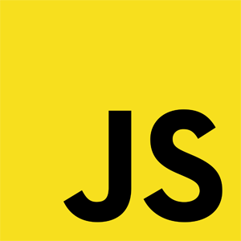

HTML

O HTML é uma linguagem de marcação. Estas linguagens são constituídas de códigos que delimitam conteúdos específicos,
segundo uma sintaxe própria. O HTML tem códigos para criar paginas na web. Estes códigos que definem o tipo de
letra, qual o tamanho, cor, espaçamento, e vários outros aspectos do site. No início era muito complicado aprender
HTML, pois eram muitos comandos para fazer algo simples. A cada nova versão, o HTML fica mais fácil de utilizar,
e adquire mais funções. Atualmente qualquer pessoa pode acessar a internet a aprender a construir um site básico
em questão de horas, seguindo os passos de tutoriais e aprendendo as funções de cada código. O HTML foi a primeira
linguagem de nível mundial, porem não é a única. Existem muitas outras linguagens destinadas á criação de paginas
da web, porém o HTML ainda prevalece. Atualmente já é possível integrar varias linguagens na mesma pagina da
Web, sendo possível usar duas ou mais linguagens no mesmo site.
CSS

O Cascading Style Sheets (CSS) foi proposto pela primeira vez em Outubro de 1994, por Hakon Lie, que queria facilitar
a programação de sites, que na época era muito mais complexa. As pessoas tinham que utilizar mais códigos para
chegar a um resultado simples, como criar uma tabela. Em 1995 o CSS1 foi desenvolvido pela W3C, um grupo de empresas
do ramo da informática. A linguagem de estilos ganhou muito destaque entre 1997 e 1999, neste período ficou conhecido
por grande parte dos programadores. No inicio, o HTML era a única linguagem utilizada para criar sites. Quando
começou a ganhar popularidade, algumas tags (comandos) foram criadas pelos navegadores para facilitar o uso da
linguagem; Para facilitar ainda mais a criação destes layouts, a W3C (World Wide Web Consortium) criou o CSS,
colocando a disposição dos Webdesigners. O CSS é uma linguagem que determina a aparência (layout) de paginas
para a Web. Este programa permite ao usuário criar paginas da Web com códigos mais fáceis de elaborar que os
códigos HTML. Estes códigos permitem fazer as aplicações com facilidade. Este programa é utilizado pelos programadores
em todo o mundo. O CSS controla as opções de margem, linhas, cores, alturas, larguras, imagens e posicionamento,
sem necessidade de programar em HTML. O CSS tem também alguns códigos prontos, permitindo aos usuários pouparem
tempo criando códigos muito comuns. Alguns benefícios do CSS: A partir de um só documento do CSS, controlam-se
vários documentos .html . Facilidade de criação dos layouts, que não precisam de códigos muito complicados linguagem
de rápido aprendizado O CSS é mais um dos programas para facilitar a vida de quem trabalha na área de informática.
Este programa, embora tenha algumas falhas - na realidade as falhas são dos navegadores que não implementam o
CSS corretamente, como algumas versões do Internet Explorer -, ajuda muito na hora de criar sites e paginas da
WEB.
Java Script

JavaScript é uma linguagem de programação muito usada no desenvolvimento de aplicativos para a Web. O JavaScript
não apareceu derrepente, tudo começou com a criação, pela Netscape, de uma linguagem de criação de Scripts Server-side,
esta linguagem foi implantada nos servidores de WEB da Netscape. Quando a Microsoft viu que o sistema Server-side
tinha futuro, criou uma linguagem, JScript, e implantou o sistema nos servidores de WEB ISS da empresa. A Netscape,
indignada pela cópia de seu sistema pela Microsoft, entrou em um novo projeto. Deixando o sistema Server-side
de lado, a empresa passou a desenvolver um sistema "client-side", que roda no navegador do usuário. Este novo
sistema que estava surgindo permitia aos usuários processarem os scripts diretamente, ao invés de usar o servidor.
Este sistema permitiu uma grande melhoria na velocidade de processamento dos dados, e colocou a Netscape no topo
novamente. A Microsoft, que estava perdendo mercado para a Netscape, copiou mais uma vez o sistema da concorrente,
implantando o Client-side em seu navegador, o Internet Explorer. Este navegador veio junto com o Windows 95.
O JavaScript teve vários nomes. O primeiro foi Mocha, o segundo foi LiveScript, e quando a Netscape passou a
ter suporte á tecnologia Java em seu navegador, mudou o nome para JavaScript, como um jogo de marketing, para
popularizar o script. Uma confusão comum, que ocorre ate mesmo entre o pessoal da área de informática, é achar
que o JavaScript tem relação com o Java. O JavaScript não foi baseado nem é ligado ao Java em seu método de criação.
Tanto o JScript (da Microsoft) quando o JavaScript (Netscape) só podiam ser usados nos navegadores das empresas
que os criaram. A Netscape encaminhou o JavaScript para a empresa ECMA, para que fosse feita uma padronização
da linguagem, permitindo assim seu funcionamento na maioria dos navegadores. A linguagem padronizada passou a
se chamar ECMAscript, e tem este nome até hoje. Embora o nome tenha mudado, quase ninguém usa o nome ECMAscript,
o nome Javascript é bem mais conhecido e usado no mundo todo. O grande diferencial do JavaScript é que este permite
o desenvolvimento dos códigos dentro do código HTML. O programador esta fazendo o site,e basta colocar o código
e iniciar a programação em Javascript, permitindo também códigos em HTML dentro do código de JavaScript.Para
finalizar a programação em JavaScript, basta digitar. Para programar em JavaScript é necessário saber o básico
de HTML e ter um editor de textos disponível.